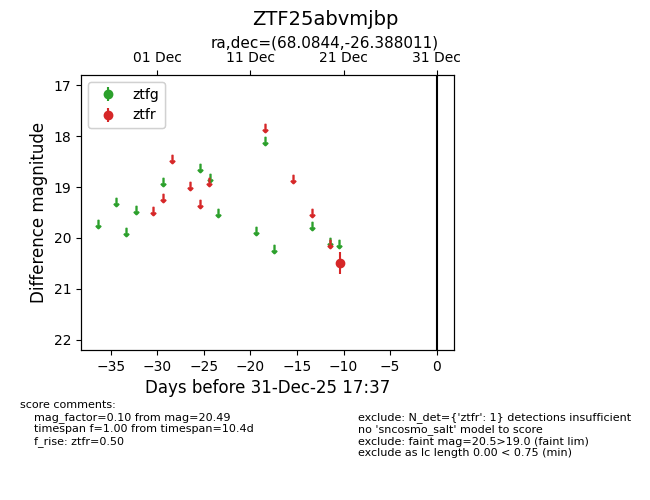
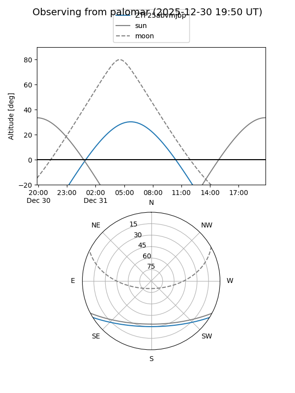

ZTF25abvmjbp
Target ZTF25abvmjbp at 2026-01-09 12:49
Aliases and brokers:
FINK: link
Lasair: link
ALeRCE: link
alt names
ZTF25abvmjbp (ztf,fink_ztf)
Coordinates:
equatorial (ra, dec) = 68.0844,-26.38801
equatorial (HMS+DMS) = 04:32:20.26,-26:23:16.84
galactic (l, b) = (225.3913,-41.10039)
Flags:
Photometry:
last ztfr=20.49
1 ztfr detections
Lightcurve

Visibility


Additional plots